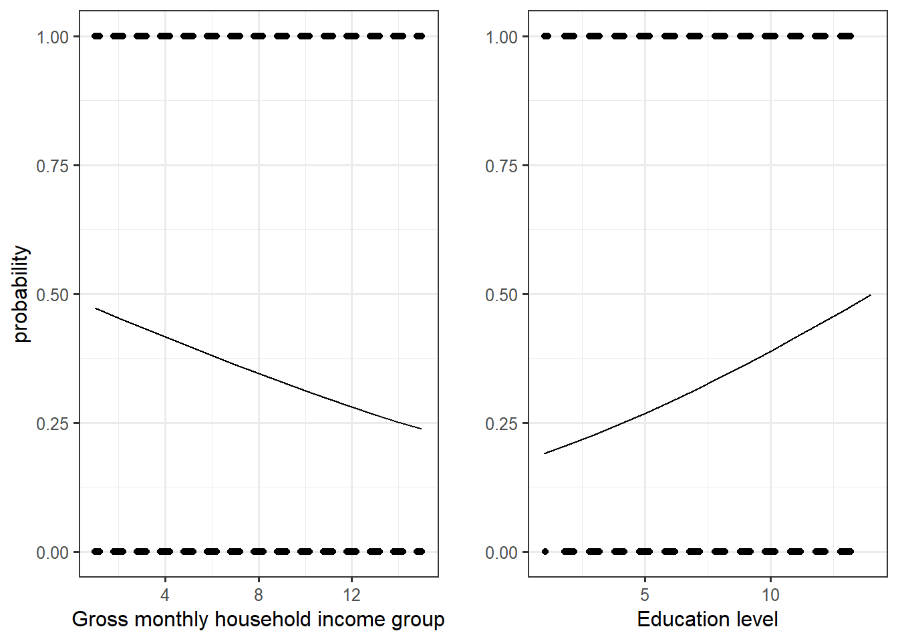

Note: this post is not finished and still in progress
Two years ago, Piketty and his team published a fascinating book about the evolution of political cleavages in almost all democratic countries in the world and even beyond. The publication of this book and of its online database got me very interested in the study of political cleavages from a political economy approach. This book contains huge amount of findings and observations, but there is one which is really emphasized by the authors: from roughly the 1980s until, the class-based political divide has become a multidimensional one incorporating a “educational” or, in Inglehart terms, a “postmaterial” or “cultural” cleavage (Gethin, Martinez-Toledano, and Piketty 2021) (Inglehart 1971). Very shortly, They found that the electoral support for the left shifted from the low income and low education classes to the highly educated ones. Regarding the electoral support for the right, the latter remains positively correlated with income.
This post is going to simply test this finding for Switzerland using the post-electoral survey for the National Council election in 2015. The following analysis is based on data analysis of the Swiss Election Study (Selects) of 2019. The dataset can be found here. I will test if the support for the left is linked positively with the education level and negatively with income.
To analyze the link between vote for the left (dependent variable) and income and education, I create a dummy variable from the variable “f10300” which asked for which party the respondent voted in the 2015 election. From this variable, I create a dummy variable taking value one if the respondant voted for either the socialist party (PS), the green (PES), solidarité or Swiss labor party (PST-POP). Note that those choices can be controversial and a matter of debate because I don’t include the Social-christian party and I include the greens. This is a matter of debate if those parties can be classified as left or not, but I will not go further about this.
Regarding the independ variables, the variable “f28910” asks the gross monthly houshold income of the individual and the variable has 15 income brackets (we thus do not have directly the income of the respondant). For education, “f21310” asks the highest level of achieved education. Here is below descriptive statistics for these variables:

| vote.left | n | prop |
|---|---|---|
| 0 | 5873 | 0.7397657 |
| 1 | 2066 | 0.2602343 |
Some observations can already be stressed with the descriptive statistics. First, the left gathered relatively few vote with only about 26% of voters. This attests the weakness of left-wing parties in Switzerland. Second, about 30% of the individuals in the sample did vocational training and this is rather coherent since in Switzerland most people follows vocational training and apprenticeship. Third, there is a weird “peak” in the income graph. Indeed, about 7.5% declared having an income superior than 15’000, which seems rather bizarre at least to me and I still have no explanation for this.
First model: binary logistic regression
Let’s first start with a logistic regression. I simply regress the vote for the left with income and education. I leave education and income coded as numerical variables for now, since they have enough categories this is not big problem. Of course, that would have been better if I had directly the income of each individual and not brackets. Moreover, I could still do a Pareto interpolation, but I can’t due to lack of information: I don’t have the average income (total and per bracket) of the sample.
The model is thus:
\[ Log(\frac{P(left)}{1 - P(left)}) = \beta_0 + \beta_1income + \beta_2educ \] Note that this is a very first step, I will step by step complexify this model.
Here is the regression table:
| Dependent variable: | |
| vote.left | |
| Gross.monthly.hh.income | 0.953*** |
| (0.007) | |
| Education.level | 1.114*** |
| (0.008) | |
| Constant | 0.199** |
| (0.078) | |
| Observations | 7,594 |
| Log Likelihood | -4,311.174 |
| Akaike Inf. Crit. | 8,628.349 |
| Note: | p<0.1; p<0.05; p<0.01 |
Here is an odds ratios plot to have a better visualization:
